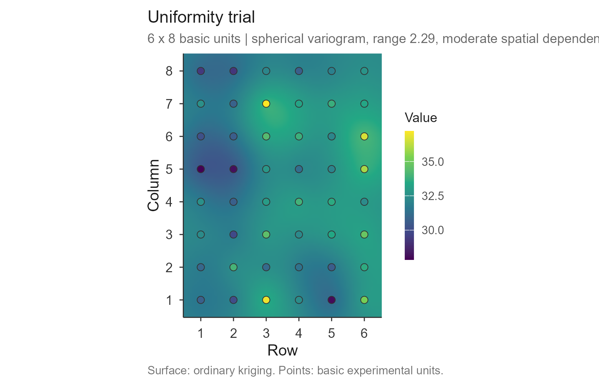
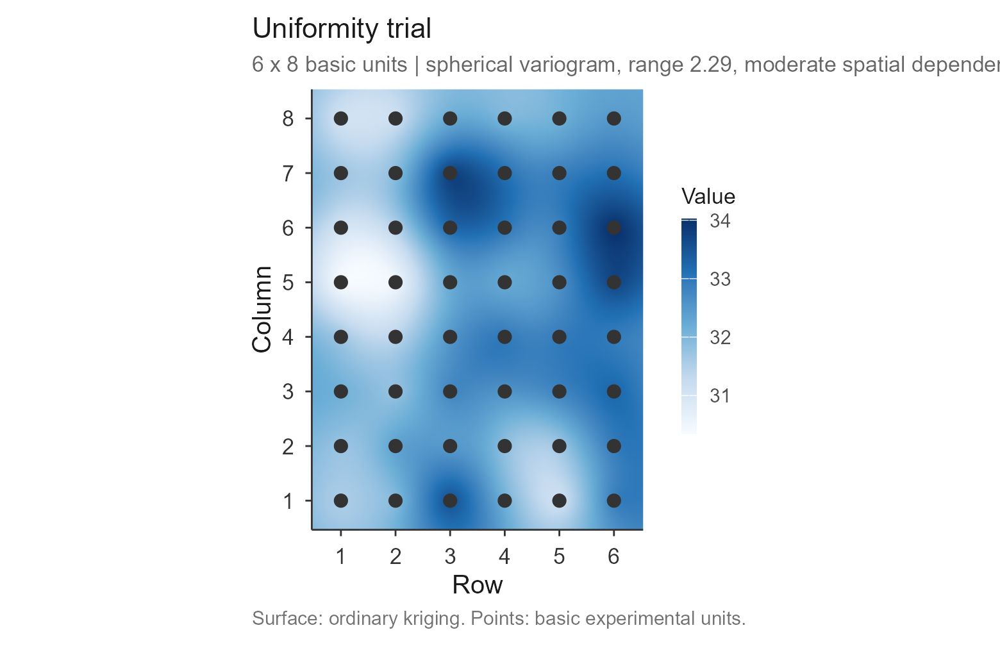
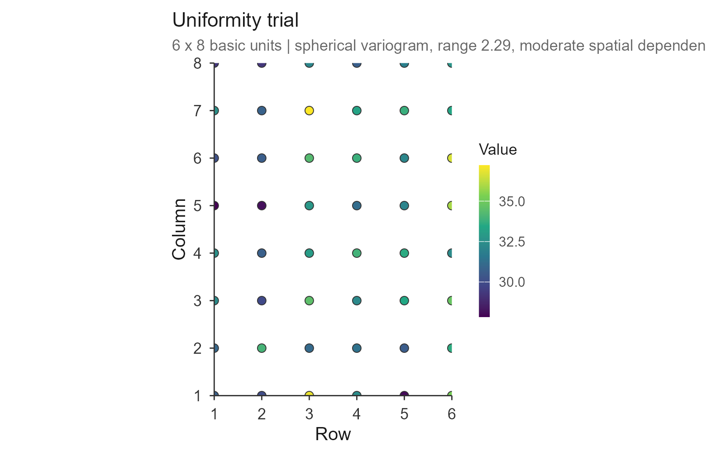
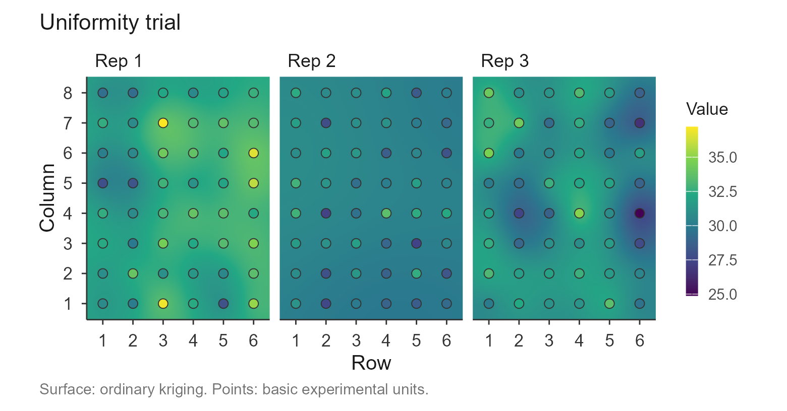

check_trial.Rmd
library(trialSize)Every method in the package turns a uniformity trial into a
recommended plot size, and every one of them assumes the trial is worth
sizing plots against. A grid with missing cells, a harvest outlier, a
fertility gradient down one side, or – most importantly – no spatial
structure at all, will still produce a number.
check_trial() is the step that looks at the raw grid of
basic experimental units (BEU) before any model is fitted, so
the number you get later is one you can trust.
It reports four things: whether the grid is structurally usable, whether the values are sane, whether there is a trend across the field, and how much spatial structure the field actually has. All of it is computed from the standard geostatistical definitions, so the package depends only on ggplot2.
The example is the chickpea uniformity trial shipped with the package: three replications, each a 6 × 8 grid of 1 m² basic units holding the fresh mass of the aerial part.
grid1 <- as.matrix(dados_ensaio_C1[dados_ensaio_C1$Rep == 1, paste0("C", 1:8)])
dim(grid1)
#> [1] 6 8The matrix must preserve the field layout: rows and columns are not interchangeable, because trend and autocorrelation are directional.
chk <- check_trial(grid1)
#> Checking 1 trial(s).
chk
#> Uniformity trial check -- Trial 1
#> Grid: 6 x 8 = 48 basic units, 0 missing
#> Shapes: 15 rectangular plot shapes available
#> Values: mean 32.311, sd 2.202, CV 6.82%, range [27.847, 37.209]
#> Outliers: 0 by the boxplot rule
#> Trend: rows p = 0.136, columns p = 0.884
#> Moran's I: 0.160 (p = 0.0868) rho row 0.252, col -0.042
#> Variogram: spherical | nugget 2.897, sill 4.437, range 2.29
#> nugget/sill 0.65 -> moderate spatial dependence
#> Issues: noneThe printout is the whole diagnostic at a glance. Reading it top to bottom:
The fitted variogram gives three numbers that bear directly on plot size, and they are the reason the check is more than a data audit.
chk$checks[[1]]$variogram[c("model", "nugget", "sill", "range",
"nugget_ratio", "dependence")]
#> $model
#> [1] "spherical"
#>
#> $nugget
#> [1] 2.896619
#>
#> $sill
#> [1] 4.437451
#>
#> $range
#> [1] 2.29014
#>
#> $nugget_ratio
#> [1] 0.6527664
#>
#> $dependence
#> [1] "moderate"The range is the distance beyond which basic units
stop being correlated. A plot larger than the range is averaging units
that are already independent – which is the spatial reading of the
plateau that fit_lrp() and fit_qrp() estimate
empirically from the CV curve. Seeing the range here, before fitting,
tells you roughly where that plateau should land.
The nugget-to-sill ratio is the share of variance with no spatial structure. Following Cambardella et al. (1994) it is read as strong dependence (below 0.25), moderate (0.25 to 0.75) or weak (above 0.75). When it is weak, the field varies almost at random from unit to unit, and no choice of plot size will buy much precision – worth knowing before fitting five models to a CV table.
The model is fitted without a spatial-statistics dependency: the range is profiled over a grid and, at each candidate, the nugget and partial sill are solved exactly under non-negativity. Spherical, exponential and Gaussian shapes are all tried and the best weighted fit is kept.
The plot() method draws the trial as a map: an
ordinary-kriging surface built from that variogram, with the basic units
drawn on top and filled on the same colour scale. The surface shows
where the field is systematically better or worse; the points show the
data the surface came from, so an interpolation artefact cannot be
mistaken for a measurement.
plot(chk)
The default palette is viridis, which is perceptually
uniform and readable in greyscale and to colour-blind readers.
"blues" gives the classic look, and
point_values = FALSE draws the units as plain position
markers instead of filling them:
plot(chk, palette = "blues", point_values = FALSE)
When the variogram shows weak spatial dependence the surface is
mostly telling you about the interpolation rather than the field, and
surface = FALSE gives the honest picture – the data
alone:
plot(chk, surface = FALSE)
Saving works as elsewhere in the package:
plot(chk, save = TRUE, file = "trial.tiff", format = "tiff", dpi = 300)Given a named list of grids, the check runs on each and the summary is one row per trial:
grids <- lapply(split(dados_ensaio_C1, dados_ensaio_C1$Rep),
function(d) as.matrix(d[, paste0("C", 1:8)]))
names(grids) <- paste("Rep", names(grids))
check_trial(grids)$summary
#> Checking 3 trial(s).
#> trial rows cols n_missing n_shapes mean cv n_outliers morans_i
#> 1 Rep 1 6 8 0 15 32.31128 6.815609 0 0.16039301
#> 2 Rep 2 6 8 0 15 30.36146 5.491876 0 -0.01025904
#> 3 Rep 3 6 8 0 15 31.01494 6.806416 1 0.15381528
#> range nugget_ratio dependence n_issues
#> 1 2.290140 0.6527664 moderate 0
#> 2 6.239547 0.8630260 weak 0
#> 3 2.263810 0.4393369 moderate 0The maps are then faceted and share one colour scale, which is what makes them directly comparable:
plot(check_trial(grids))
#> Checking 3 trial(s).
A grid whose sides are prime admits almost no plot shapes, and the check says so rather than letting the CV-based methods fail later:
check_trial(matrix(rnorm(77, 100, 10), nrow = 7))$checks[[1]]$issues
#> Checking 1 trial(s).
#> [1] "only 3 plot shape(s) available from a 7 x 11 grid"Fitting the variogram is the only appreciable computation. With a
very large grid, or when you only want the structural and value checks,
variogram = FALSE skips it.
check_trial() is the entry point of the workflow. Once a
trial passes, build the CV table with
vignette("cv_shapes"), fit the models with
vignette("lrp"), vignette("qrp") and
vignette("mcm"), or use the raw grid directly with
vignette("paranaiba"). To see every method’s recommendation
side by side, see vignette("compare").
Cambardella, C. A. et al. (1994). Field-scale variability of soil properties in central Iowa soils. Soil Science Society of America Journal, 58(5), 1501-1511.
Matheron, G. (1963). Principles of geostatistics. Economic Geology, 58(8), 1246-1266.
Webster, R. & Oliver, M. A. (2007). Geostatistics for Environmental Scientists, 2nd ed. Wiley, Chichester.